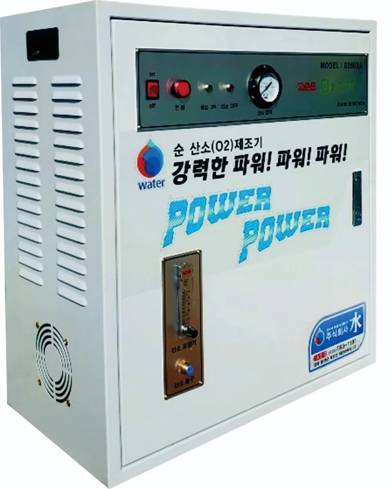
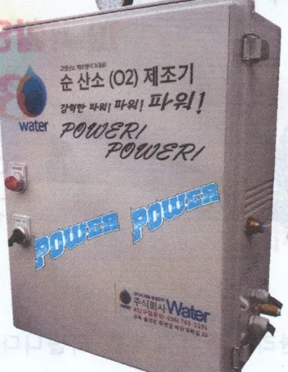
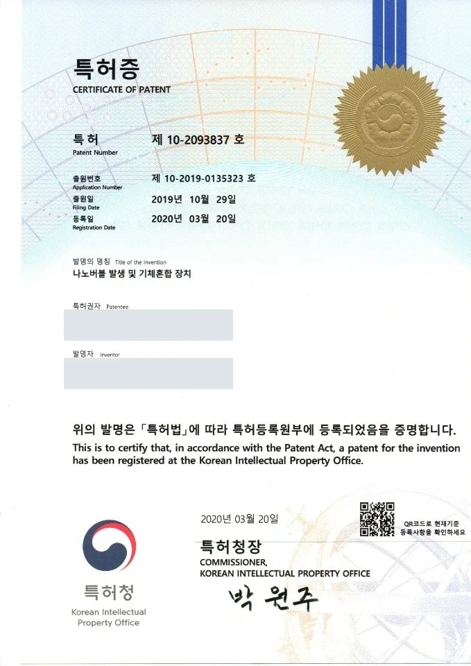
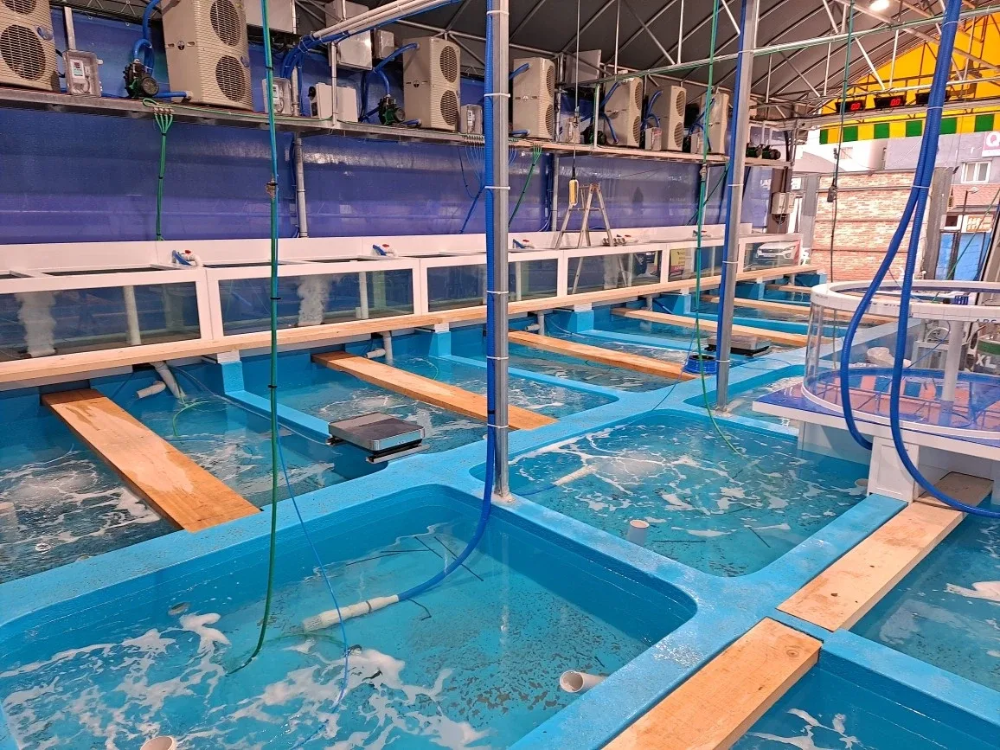

제품 안내
대표모델 2660A·2660B와 가격, 사양을 확인하고 업장에 맞는 구성을 견적으로 받아 보세요.
순산소(O2) 제조기
대표모델 2660A · 2660B
현장에서 산소를 만들어 수조로 보내는 순산소 제조기입니다.
- 24시간 작동
- 해수·민물 사용
- 전국 설치·A/S


가격과 사양
사양
| 유량 | 문의 |
|---|---|
| 압력 | 4~5 kgf/cm² |
| 공급유량 | 10 Liter 이상 |
| 공급순도 | 90% O₂ |
| 정격전압 | 220VAC (60Hz) |
| 소비전력 | 0.48KW/h |
| 중량 | 대표모델 2660A 40kg 대표모델 2660B 25kg |
| 용도 | 산소발생기 |
자세한 제품 사양은 054-783-1191로 문의해 주세요.
특허

- 특허번호제10-2093837호
- 발명의 명칭나노버블 발생 및 기체혼합 장치
- 출원일2019년 10월 29일
- 등록일2020년 03월 20일
대게·활어 유통센터용
순산소 제조기 (기본)
유통센터의 수조에 액화산소 대신 고농도 산소를 대는 본체입니다. 고압 액화산소 탱크를 보관하지 않아도 됩니다.
- 쓰는 곳대게·활어 유통센터
- 하는 일현장에서 산소를 만들어 수조로 공급
- 설치·A/S전국
- 가격800만원

대게·활어 횟집 수조용
산소분산기 (해수용·내수용)
횟집 수조 안에 넣어 산소를 잘게 퍼뜨리는 분산기입니다. 바닷물 수조에는 해수용, 민물 수조에는 내수용을 씁니다.
- 쓰는 곳대게·활어 횟집 수조
- 종류해수용 · 내수용
- 설치·A/S전국
- 가격견적 문의
제품 사진 준비 중
바다장어 어선용 (해상용)
순산소 제조기 (해상용)
배 위 수조에 액화산소 대신 산소를 대는 본체입니다. 바다장어 어선에서 사용 중입니다.
- 쓰는 곳바다장어 어선
- 하는 일배 위에서 산소를 만들어 수조로 공급
- 설치·A/S전국
- 가격900만원
설치 사진 준비 중